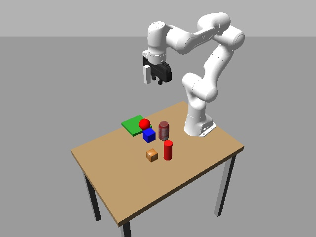
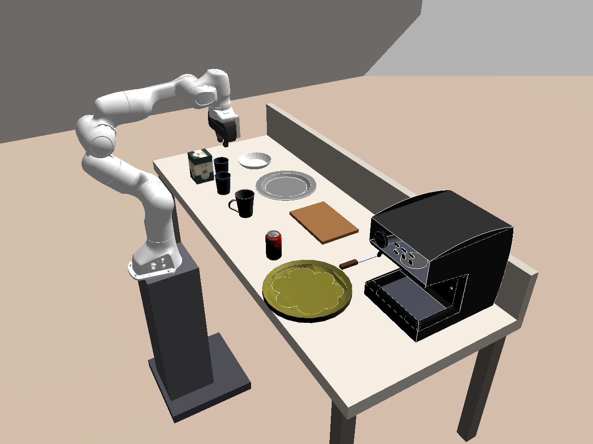
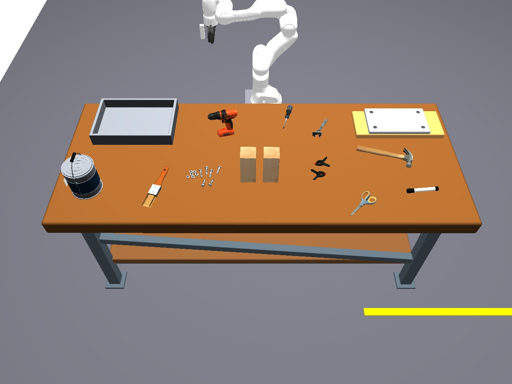

Simulation results
Planning accuracy in three simulated scenes: tabletop, kitchen, and workshop.
Gazebo environments
The evaluation uses three simulated manipulation environments with different objects, tools, and task requirements.



Successful results by model
Individual instructions
| Model | Method | Scene | Task type | Instruction | Plan | Result |
|---|